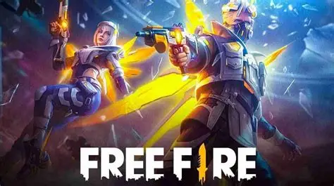
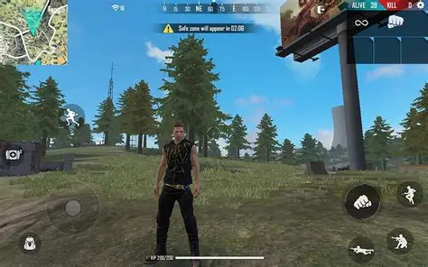

Free Fire é um dos jogos de Battle Royale mais populares do mundo, onde 50 jogadores saltam de paraquedas em uma ilha remota em busca de sobrevivência. A história foca em personagens com habilidades únicas que foram levados para este combate por uma organização misteriosa. Cada partida dura cerca de 10 minutos, e o único objetivo é ser o último sobrevivente (ou squad) em pé, utilizando estratégia, veículos e um vasto arsenal de armas para vencer o "Booyah!".

Dicas do game
Para subir de patente e garantir o Booyah, a primeira dica é dominar o uso da Parede de Gel; ela é sua melhor defesa em campo aberto e pode salvar sua vida em segundos. Sempre procure ficar atento ao fechamento da "Safe Zone" para não ser pego pelo gás, movendo-se com antecedência para posições elevadas que garantem vantagem tática. Escolher bem o local do salto inicial também é vital: áreas com muito "loot" costumam ter muitos inimigos logo no começo.
Outro ponto fundamental é a combinação de habilidades dos personagens; misturar a cura do Alok com a resistência do Andrew, por exemplo, pode tornar seu squad muito difícil de derrubar. Pratique o "controle de recuo" das armas no modo treinamento para conseguir acertar mais capas (headshots) durante as trocas de tiro reais. O uso de fones de ouvido é obrigatório para identificar a direção dos passos e dos disparos inimigos antes mesmo de vê-los no mapa.
Por fim, aprenda a gerenciar sua mochila: não carregue itens desnecessários e priorize kits médicos e inaladores para manter sua vida cheia. Se você estiver jogando em Squad, a comunicação é a chave para o sucesso; nunca se afaste demais dos seus companheiros, pois o suporte mútuo é o que define as vitórias nas patentes mais altas como Mestre e Desafiante. Mantenha a calma nos momentos finais da partida para tomar as melhores decisões sob pressão.

Novidades desta versão do game
A versão atual do Free Fire trouxe um sistema de otimização que permite rodar o jogo com mais fluidez mesmo em aparelhos mais básicos, mantendo a alta performance competitiva. Novos personagens com habilidades passivas e ativas foram adicionados ao elenco, permitindo estratégias de jogo ainda mais variadas e dinâmicas. O mapa Bermuda recebeu atualizações visuais e novos pontos de interesse que mudaram as rotas de rotação preferidas dos jogadores profissionais.
O modo Contra Squad (CS) também ganhou novas regras e uma loja de armas reformulada, tornando as partidas rápidas ainda mais equilibradas e emocionantes. Eventos sazonais e colaborações com grandes marcas e artistas globais trazem skins exclusivas e modos de jogo temporários que mantêm a comunidade sempre engajada. Além disso, o sistema de "Guildas 2.0" agora oferece recompensas muito mais atrativas para grupos que jogam juntos regularmente.
As armas de evolução foram aprimoradas, permitindo que os jogadores personalizem os efeitos visuais e sonoros de seus armamentos favoritos conforme sobem de nível. Melhorias no sistema anti-hacker também foram implementadas para garantir um ambiente de jogo mais justo e competitivo para todos. O lobby principal foi redesenhado com uma interface mais intuitiva, facilitando o acesso rápido às missões diárias e ao Passe de Elite atualizado com temas futuristas.